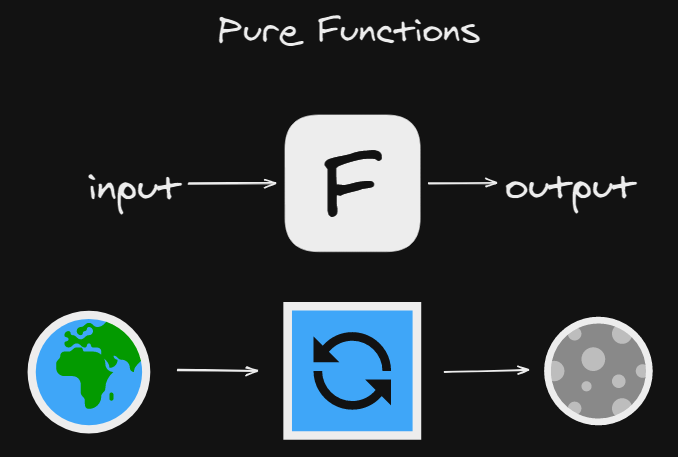
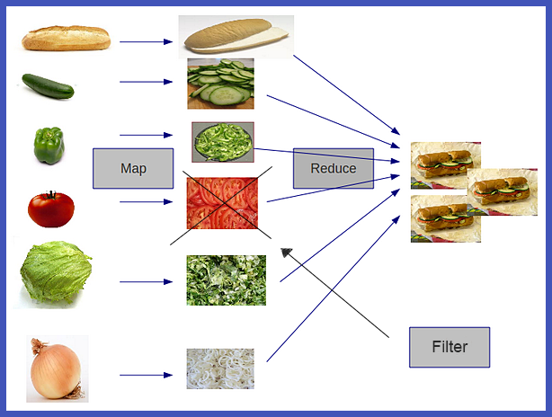

Introducción a la Programación Funcional 🔮 en JS
Contenido
- Qué es?
- Inmutablidad y Side Effects
- Funciones Puras
- Metodos de listas
- Ejercicios
Qué es?
¡Es un paradigma!¿Por qué?
- Es predicible
- Facil de probar
- Facil de programar (en JS)
Inmutablidad y Side Effects
Side Effects
let globalState = 0
function changeState () {
globalState += 1
}
changeState()
console.log(globalState) // 1
Inmutablidad
const count = 0;
function increment (num) {
return num + 1
}
const newCount = increment(count)
console.log(newCount) // 1
Funciones Puras
Generalidades
- Entrada y Salida
- Misma entrada, misma salida
- Misma entrada, misma salida
- No resultados Alatorios
- Si no hay entrada, debe dar una misma salida
Metodos de Listas
Map
function transform (arr, fn) {
let list = new Array(arr.length);
for(let i = 0; i < arr.length; i++) {
list[i] = fn(arr[i], i, arr)
}
return list
}
let powToTwo = transform([1,2,3,4,5,6], (el) => el * 2)
// 2, 4, 6, 8, 10, 12
Filter
function exclusion (arr, fn) {
let list = new Array(arr.length);
for(let i = 0; i < arr.length; i++) {
if (fn(arr[i], i, arr)) {
list.push(arr[i])
}
}
return list
}
let greaterThan2 = exclusion([1,2,3,4,5,6], (el) => el < 2)
// 3, 4, 5, 6
Reduce
function composition (arr, fn, init) {
let total = init;
for(let i = 0; i < arr.length; i++) {
total = fn(total, arr[i], i, arr)
}
return total
}
let sum = composition([1,2,3,4,5,6], (acc, el) => el + acc, 0)
// 21